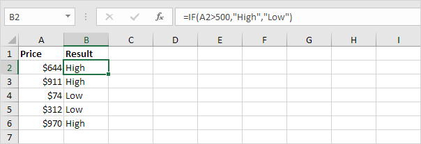
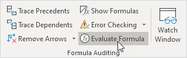
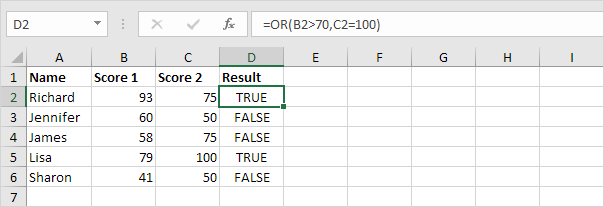
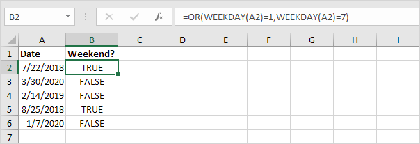
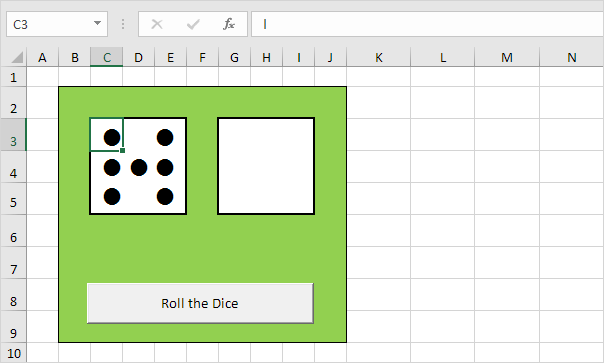
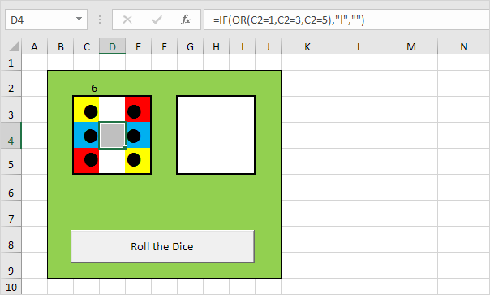
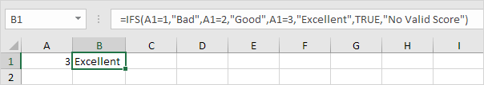
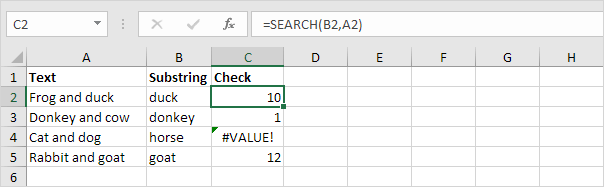
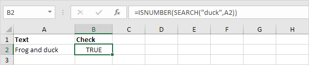

Fungsi IF adalah salah satu fungsi yang paling banyak digunakan di Excel. Halaman ini berisi banyak contoh IF yang mudah diikuti.
 unduh file if dan coba masukkan fungsi-fungsi ini.
unduh file if dan coba masukkan fungsi-fungsi ini.
Contoh IF Sederhana (Simple If Examples)
Fungsi IF memeriksa apakah suatu kondisi terpenuhi, dan mengembalikan satu nilai jika benar dan nilai lain jika salah.
1a. Misalnya, lihat fungsi IF di sel B2 di bawah ini.

Penjelasan: jika harga lebih besar dari 500, fungsi IF mengembalikan High, jika tidak mengembalikan Low.
1b. Fungsi IF berikut menghasilkan hasil yang sama persis.

Catatan: Anda dapat menggunakan operator perbandingan berikut : = (sama dengan), > (lebih besar dari), < (kurang dari), >= (lebih besar atau sama dengan), <= (kurang dari atau sama dengan) dan <> (tidak sebanding dengan).
2. Selalu sertakan teks dalam tanda kutip ganda.

3a. Rumus di bawah ini menghitung kemajuan antara dua titik waktu.

3b. Anda dapat menggunakan fungsi IF untuk menampilkan string kosong jika nilai akhir belum dimasukkan (lihat baris 5).

Penjelasan: jika nilai akhir tidak kosong (<> berarti tidak sama dengan), fungsi IF menghitung kemajuan antara nilai awal dan akhir, selain itu akan menampilkan string kosong (dua tanda kutip ganda tanpa apa pun di antaranya).
Dan/Atau Kriteria (And/Or Criteria)
Gunakan fungsi IF dalam kombinasi dengan fungsi AND dan fungsi OR dan jadilah ahli Excel.
1. Sebagai contoh, perhatikan fungsi IF pada sel D2 di bawah ini.

Penjelasan: fungsi AND mengembalikan TRUE jika skor pertama lebih besar atau sama dengan 60 dan skor kedua lebih besar atau sama dengan 90, selain itu mengembalikan FALSE. Jika TRUE, fungsi IF mengembalikan Pass, jika FALSE, fungsi IF mengembalikan Fail.
2. Sebagai contoh, perhatikan fungsi IF pada sel D2 di bawah ini.

Penjelasan: fungsi OR mengembalikan TRUE jika setidaknya satu skor lebih besar dari atau sama dengan 60, selain itu mengembalikan FALSE. Jika TRUE, fungsi IF mengembalikan Pass, jika FALSE, fungsi IF mengembalikan Fail.
3. Sebagai contoh, perhatikan fungsi IF pada sel D2 di bawah ini.

Penjelasan: fungsi AND di atas memiliki dua argumen yang dipisahkan oleh koma (Tabel, Hijau atau Biru). Fungsi AND mengembalikan TRUE jika Produk sama dengan "Tabel" dan Warna sama dengan "Hijau" atau "Biru". Jika TRUE, fungsi IF mengurangi harga sebesar 50%, jika FALSE, fungsi IF mengurangi harga sebesar 10%.
IF Bersarang (Nested If)
Fungsi IF di Excel bisa disarangkan, saat Anda memiliki beberapa kondisi yang harus dipenuhi. Nilai FALSE digantikan oleh fungsi IF lain untuk melakukan pengujian lebih lanjut.
1. Misalnya, lihat rumus IF bersarang di sel C2 di bawah ini.

Penjelasan: jika skor sama dengan 1, rumus IF bersarang menghasilkan Buruk, jika skor sama dengan 2, rumus IF bersarang menghasilkan Baik, jika skor sama dengan 3, rumus IF bersarang menghasilkan Sangat Baik, jika tidak maka mengembalikan Tidak Valid. Jika Anda memiliki Excel 2016 atau lebih baru, cukup gunakan fungsi IFS .
2. Misalnya, lihat rumus IF bersarang di sel C2 di bawah ini.

Penjelasan: jika skor kurang dari 60, rumus IF bersarang mengembalikan F, jika skor lebih besar atau sama dengan 60 dan kurang dari 70, rumus mengembalikan D, jika skor lebih besar atau sama dengan 70 dan kurang dari 80, rumus mengembalikan C, jika skor lebih besar atau sama dengan 80 dan kurang dari 90, rumus mengembalikan B, selain itu mengembalikan A.
Lebih lanjut mengenai IF (More about If)
Fungsi IF adalah fungsi yang bagus. Mari kita lihat beberapa contoh keren lainnya.
1. Misalnya, gunakan IF dan AND untuk menguji apakah suatu nilai berada di antara dua angka.

Penjelasan: fungsi AND mengembalikan TRUE jika orang tersebut lebih tua dari 12 tahun dan lebih muda dari 20 tahun, selain itu mengembalikan FALSE. Jika TRUE, fungsi IF mengembalikan Ya, jika FALSE, fungsi IF mengembalikan Tidak.
2. Anda dapat menggabungkan IF dengan AVERAGE, SUM dan fungsi Excel lainnya. Langit adalah batasnya!

Penjelasan: fungsi AND mengembalikan TRUE jika nilai input lebih besar dari 100 dan rata-rata nilai dalam Nama Range Data1 lebih besar dari 100, selain itu mengembalikan FALSE. Jika TRUE, fungsi IF mengembalikan jumlah Data2, jika FALSE, fungsi IF mengembalikan 0.
Bingung? Anda selalu dapat menggunakan alat Evaluasi Rumus untuk menelusuri rumus IF Anda. Alat Excel ini membantu Anda memahami rumus.
3. Misalnya, pilih sel G3 di atas.
4. Pada tab Rumus, dalam grup Audit Rumus, klik Evaluasi Rumus.

5. Klik Evaluasi beberapa kali.

Catatan: coba sendiri. Unduh file Excel dan pilih salah satu rumus IF yang dijelaskan di halaman ini. Anda dapat menggunakan alat ini untuk menelusuri semua jenis rumus.
Gunakan operator perbandingan di Excel untuk memeriksa apakah dua nilai sama satu sama lain, jika satu nilai lebih besar dari nilai lain, jika satu nilai kurang dari nilai lain, dll.
unduh file comparison operators dan coba masukkan fungsi-fungsi ini.
(=) Sama dengan (Equal to)
Operator sama dengan (=) mengembalikan TRUE jika dua nilai sama satu sama lain.
1. Misalnya, lihat rumus di sel C1 di bawah ini.

Penjelasan: rumus mengembalikan TRUE karena nilai di sel A1 sama dengan nilai di sel B1. Selalu awali rumus dengan tanda sama dengan (=).
2. Fungsi IF di bawah ini menggunakan operator sama dengan.
Penjelasan: jika dua nilai (angka atau string teks) sama satu sama lain, fungsi IF mengembalikan Ya, jika tidak mengembalikan Tidak.
(>) Lebih besar dari (Greater than)
Operator lebih besar dari (>) mengembalikan TRUE jika nilai pertama lebih besar dari nilai kedua.
1. Misalnya, lihat rumus di sel C1 di bawah ini.

Penjelasan: rumus mengembalikan TRUE karena nilai di sel A1 lebih besar dari nilai di sel B1.
2. Fungsi OR di bawah ini menggunakan operator lebih besar dari.

Penjelasan: fungsi OR ini mengembalikan TRUE jika setidaknya satu nilai lebih besar dari 50, selain itu mengembalikan FALSE.
(<) Kurang dari (Less than)
Operator kurang dari (<) mengembalikan TRUE jika nilai pertama lebih kecil dari nilai kedua.
1. Misalnya, lihat rumus di sel C1 di bawah ini.

Penjelasan: rumus mengembalikan TRUE karena nilai di sel A1 lebih kecil dari nilai di sel B1.
2. Fungsi AND di bawah ini menggunakan operator kurang dari.

Penjelasan: fungsi AND ini mengembalikan TRUE jika kedua nilai kurang dari 80, selain itu mengembalikan FALSE.
(>=) Lebih dari atau sama dengan (Greater than or equal to)
Operator lebih besar dari atau sama dengan (>=) mengembalikan TRUE jika nilai pertama lebih besar dari atau sama dengan nilai kedua.
1. Misalnya, lihat rumus di sel C1 di bawah ini.

Penjelasan: rumus mengembalikan TRUE karena nilai di sel A1 lebih besar atau sama dengan nilai di sel B1.
2. Fungsi COUNTIF di bawah ini menggunakan operator yang lebih besar atau sama dengan.

Penjelasan: fungsi COUNTIF ini menghitung jumlah sel yang lebih besar atau sama dengan 10.
(<=) Kurang dari atau sama dengan (Less than or equal to)
Operator kurang dari atau sama dengan (<=) mengembalikan TRUE jika nilai pertama lebih kecil atau sama dengan nilai kedua.
1. Misalnya, lihat rumus di sel C1 di bawah ini.

Penjelasan: rumus mengembalikan TRUE karena nilai di sel A1 kurang dari atau sama dengan nilai di sel B1.
2. Fungsi SUMIF di bawah ini menggunakan operator kurang dari atau sama dengan.

Penjelasan: fungsi SUMIF ini menjumlahkan nilai dalam rentang A1:A5 yang kurang dari atau sama dengan 10.
(<>) Tidak sebanding dengan (Not Equal to)
Operator tidak sama dengan (<>) mengembalikan TRUE jika dua nilai tidak sama satu sama lain.
1. Misalnya, lihat rumus di sel C1 di bawah ini.

Penjelasan:
rumus mengembalikan TRUE karena nilai di sel A1 tidak sama dengan nilai di sel B1.
2. Fungsi IF di bawah ini menggunakan operator tidak sama dengan.

Penjelasan: jika dua nilai (angka atau string teks) tidak sama satu sama lain, fungsi IF mengembalikan Tidak, jika tidak mengembalikan Ya.
Fungsi OR di Excel mengembalikan TRUE jika salah satu kondisi benar dan mengembalikan FALSE jika semua kondisi salah. Gabungkan fungsi OR dengan fungsi lain dan jadilah ahli Excel.
unduh file file Or dan coba masukkan fungsi-fungsi ini.
1. Sebagai contoh, perhatikan fungsi OR pada sel D2 di bawah ini.

Penjelasan: fungsi OR mengembalikan TRUE jika skor pertama lebih besar dari 70 atau skor kedua sama dengan 100, selain itu mengembalikan FALSE.
2. Gabungkan fungsi OR dengan fungsi IF .
Penjelasan: fungsi OR mengembalikan TRUE atau FALSE (lihat contoh sebelumnya). Jika TRUE, fungsi IF mengembalikan Pass, jika FALSE, fungsi IF mengembalikan Fail.
3. Sebagai contoh, perhatikan fungsi OR pada sel E2 di bawah ini.

Penjelasan: fungsi OR mengembalikan TRUE jika setidaknya satu skor lebih besar dari atau sama dengan 90, selain itu mengembalikan FALSE. Fungsi OR dapat menguji hingga 255 kondisi. Satu-satunya cara agar fungsi OR mengembalikan FALSE adalah jika semua kondisinya FALSE (baris 6).
4. Rumus array di bawah ini menggunakan fungsi OR untuk mengembalikan TRUE jika ada sel dalam rentang A1:E6 lebih besar dari atau sama dengan 90.
Penjelasan: selesaikan rumus array dengan menekan Ctrl+Shift+Enter. Excel menambahkan kurung kurawal {}. Nilai dalam sel D4 lebih besar dari atau sama dengan 90. Akibatnya, rumus array mengembalikan TRUE.
5. Gabungkan fungsi OR dengan fungsi AND.

Penjelasan: Fungsi AND mengembalikan TRUE jika semua kondisi benar dan mengembalikan FALSE jika salah satu kondisi salah. Fungsi AND di atas memiliki dua argumen yang dipisahkan oleh koma (Tabel, Hijau atau Biru). Fungsi AND mengembalikan TRUE jika Produk sama dengan "Tabel" dan Warna sama dengan "Hijau" atau "Biru".
6. Gabungkan fungsi OR dengan fungsi WEEKDAY.

Penjelasan: fungsi WEEKDAY di Excel mengembalikan angka dari 1 (Minggu) hingga 7 (Sabtu) yang mewakili hari dalam seminggu dari suatu tanggal. Akibatnya, fungsi OR mengembalikan TRUE jika tanggal jatuh pada akhir pekan.
7. Jangan bingung antara fungsi OR dengan fungsi XOR (Exclusive OR).
Penjelasan: fungsi XOR mengembalikan TRUE jika sejumlah kondisi ganjil benar, dan FALSE sebaliknya. Dengan dua kondisi (lihat contoh di atas) fungsi XOR mengembalikan TRUE jika satu kondisi benar (baris 2) dan mengembalikan FALSE jika kedua kondisi salah (baris 3, 4 dan 6) atau kedua kondisi benar! (baris 5).
Contoh ini mengajarkan Anda bagaimana mensimulasikan pelemparan dua dadu di Excel. Jika Anda sedang terburu-buru, cukup unduh file Excel.
unduh file melempar dadu dan coba masukkan fungsi-fungsi ini.
Catatan: petunjuk di bawah ini tidak mengajarkan Anda cara memformat lembar kerja. Kami berasumsi bahwa Anda tahu cara mengubah ukuran font, gaya font, menyisipkan baris dan kolom, menambahkan batas, mengubah warna latar belakang, dll.
1. Saat ini, setiap sel berisi huruf l (seperti pada singa). Dengan gaya font Wingdings, saya ini terlihat seperti titik-titik.

2. Masukkan fungsi RANDBETWEEN di sel C2.

3. Masukkan rumus yang ditunjukkan di bawah ini ke dalam sel kuning. Jika kita menggulung 2, 3, 4, 5 atau 6, sel-sel ini harus berisi titik.
4. Masukkan rumus yang ditunjukkan di bawah ini ke dalam sel darah merah. Jika kita menggulung 4, 5 atau 6, sel-sel ini harus berisi titik.

5. Masukkan rumus yang ditunjukkan di bawah ini ke dalam sel biru. Jika kita menggulung 6, sel-sel ini harus berisi titik.
6. Masukkan rumus yang ditunjukkan di bawah ini ke dalam sel abu-abu. Jika kita menggulung 1, 3 atau 5, sel ini harus berisi titik.

7. Salin rentang C2:E5 dan tempel ke rentang G2:I5.
8. Ubah warna font sel C2 dan sel G2 menjadi hijau (agar angkanya tidak terlihat).
9. Klik tombol perintah pada lembar (atau tekan F9).
Hasil.

Gunakan fungsi IFS di Excel 2016 atau yang lebih baru saat Anda memiliki beberapa kondisi yang harus dipenuhi. Fungsi IFS mengembalikan nilai yang sesuai dengan kondisi TRUE pertama.
Catatan : jika Anda tidak memiliki Excel 2016 atau yang lebih baru, Anda dapat menyarangkan fungsi IF.
1a. Jika nilai di sel A1 sama dengan 1, fungsi IFS mengembalikan Buruk.
1b. Jika nilai di sel A1 sama dengan 2, fungsi IFS mengembalikan Baik.

1c. Jika nilai di sel A1 sama dengan 3, fungsi IFS mengembalikan Sangat Baik.

1d. Jika nilai di sel A1 sama dengan nilai lain, fungsi IFS mengembalikan Skor Tidak Valid.

Catatan : alih-alih TRUE, Anda juga dapat menggunakan 1=1 atau hal lain yang selalu TRUE.
Berikut contoh lain.
2a. Jika nilai dalam sel A1 kurang dari 60, fungsi IFS mengembalikan F.
2b. Jika nilai dalam sel A1 lebih besar atau sama dengan 60 dan kurang dari 70, fungsi IFS mengembalikan D.
2c. Jika nilai dalam sel A1 lebih besar atau sama dengan 70 dan kurang dari 80, fungsi IFS mengembalikan C.

2d. Jika nilai dalam sel A1 lebih besar dari atau sama dengan 80 dan kurang dari 90, fungsi IFS mengembalikan B.

2e. Jika nilai dalam sel A1 lebih besar atau sama dengan 90, fungsi IFS mengembalikan A.

Catatan : untuk sedikit mengubah batas, Anda mungkin ingin menggunakan "<=" alih-alih "<" dalam fungsi Anda sendiri.
Untuk memeriksa apakah sel berisi teks tertentu, gunakan ISNUMBER dan SEARCH di Excel. Tidak ada fungsi CONTAIN di Excel.
unduh file berisi teks khusus dan coba masukkan fungsi-fungsi ini.
1. Untuk menemukan posisi substring dalam string teks, gunakan fungsi SEARCH.

Penjelasan :
"duck" ditemukan di posisi 10, "Donkey" ditemukan di posisi 1, sel A4 tidak berisi kata "horse" dan "goat" ditemukan di posisi 12.
2. Tambahkan fungsi ISNUMBER. Fungsi ISNUMBER mengembalikan TRUE jika sel berisi angka, dan FALSE jika tidak.

Penjelasan :
sel A2 berisi kata "duck", sel A3 berisi kata "donkey", sel A4 tidak berisi kata "horse" dan sel A5 berisi kata "goat".
3. Anda juga dapat memeriksa apakah sel berisi teks tertentu, tanpa menampilkan substring. Pastikan untuk menyertakan substring dalam tanda kutip ganda.

4. Untuk melakukan pencarian yang sensitif, ganti fungsi SEARCH dengan fungsi FIND.
Penjelasan :
rumus di sel C3 mengembalikan FALSE sekarang. Sel A3 tidak mengandung kata "donkey" tetapi berisi kata "Donkey".
5. Tambahkan fungsi IF. Rumus di bawah (peka huruf besar/kecil) mengembalikan "Ditemukan" jika sel berisi teks tertentu, dan "Tidak Ditemukan" jika tidak.

6. Anda juga dapat menggunakan IF dan COUNTIF di Excel untuk memeriksa apakah sel berisi teks tertentu. Namun, fungsi COUNTIF selalu tidak peka huruf besar-kecil.

Penjelasan :
rumus di sel C2 direduksi menjadi =IF(COUNTIF(A2,"*duck*"),"Ditemukan",,"Tidak Ditemukan"). Tanda bintang (*) cocok dengan serangkaian karakter nol atau lebih. Kunjungi halaman
kami tentang
fungsi COUNTIF untuk mempelajari semua yang perlu Anda ketahui tentang fungsi hebat ini.
Contoh ini mengajarkan Anda cara menggunakan fungsi SWITCH di Excel 2016 atau yang lebih baru, bukan fungsi IFS.
unduh file switch dan coba masukkan fungsi-fungsi ini.
1a. Misalnya, fungsi IFS di bawah ini menemukan status yang benar.
Penjelasan : sel A2 berisi string 85-UT. Fungsi RIGHT mengekstrak 2 karakter paling kanan dari string ini (UT). Akibatnya, fungsi IFS mengembalikan status yang benar (Utah). Jika 2 karakter paling kanan tidak sama dengan UT, TX atau OH, fungsi IFS mengembalikan tanda tanya. Alih-alih TRUE, Anda juga dapat menggunakan 1=1 atau sesuatu yang lain yang selalu TRUE.
1b. Fungsi SWITCH di bawah ini menghasilkan hasil yang sama persis tetapi jauh lebih mudah dibaca.
Penjelasan : jika argumen pertama (RIGHT(A2,2) dalam contoh ini) sama dengan UT, fungsi SWITCH mengembalikan Utah. Jika TX, Texas. Jika OH, Ohio. Argumen terakhir (tanda tanya dalam contoh ini) selalu merupakan nilai default (jika tidak ada kecocokan).
2. Mengapa tidak selalu menggunakan fungsi SWITCH di Excel? Ada banyak contoh di mana Anda tidak dapat menggunakan fungsi SWITCH alih-alih fungsi IFS.

Penjelasan : karena kita menggunakan simbol"<" dan ">=" dalam fungsi IFS ini, kita tidak dapat menggunakan fungsi SWITCH.
Gunakan fungsi IF dan string kosong di Excel untuk memeriksa apakah sel kosong. Gunakan IF dan ISBLANK untuk menghasilkan hasil yang sama persis.
Jika Kosong (If Blank)
Ingat, fungsi IF di Excel memeriksa apakah suatu kondisi terpenuhi, dan mengembalikan satu nilai jika benar dan nilai lain jika salah.
1. Fungsi IF di bawah ini mengembalikan Ya jika nilai input sama dengan string kosong (dua tanda kutip ganda tanpa apa pun di antaranya), jika tidak, fungsi tersebut mengembalikan No.
Catatan : jika sel input berisi spasi, itu terlihat kosong. Namun, jika ini masalahnya, nilai input tidak sama dengan string kosong dan fungsi IF di atas akan mengembalikan No.
2. Gunakan IF dan ISBLANK untuk menghasilkan hasil yang sama persis.
Catatan : fungsi ISBLANK mengembalikan TRUE jika sel kosong dan FALSE jika tidak. Jika sel input berisi spasi atau rumus yang mengembalikan string kosong, sel tersebut akan terlihat kosong. Namun, jika ini masalahnya, sel input tidak kosong dan rumus di atas akan mengembalikan No.
Jika Tidak Kosong (If Not Blank)
Di Excel, <> berarti tidak sama dengan.
1. Fungsi IF di bawah ini mengalikan nilai input dengan 2 jika nilai input tidak sama dengan string kosong (dua tanda kutip ganda tanpa apa-apa di antaranya), selain itu mengembalikan string kosong.
2. Gunakan IF, NOT dan ISBLANK untuk menghasilkan hasil yang sama persis.

Sorot Sel Kosong (Highlight Blank Cells)
Anda dapat menggunakan pemformatan bersyarat di Excel untuk menyorot sel yang kosong.
1. Misalnya, pilih rentang A1:H8.
2. Pada tab Beranda, dalam grup Gaya, klik Pemformatan Bersyarat.

3. Klik Sorot Aturan Sel, Aturan Lainnya.
4. Pilih Kosong dari daftar drop-down, pilih gaya pemformatan dan klik OK.
Hasil.

Catatan : kunjungi halaman kami tentang pemformatan bersyarat untuk mempelajari lebih lanjut tentang fitur Excel yang keren ini.